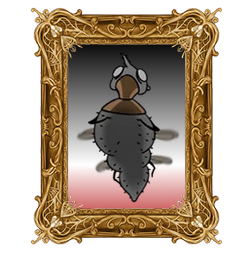
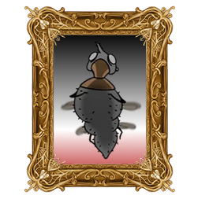
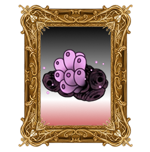
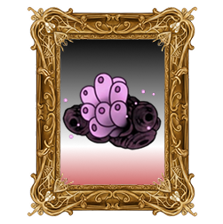
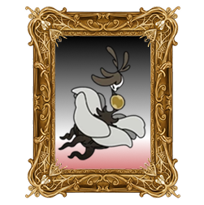
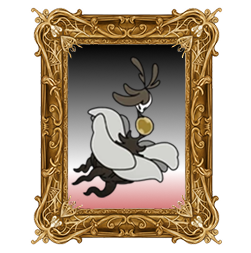

Why Hollow Knight: Silksong?
This game means so much to me, after being confirmed as a sequel for Hollow Knight instead of a prequel title I just wanted more content even after I was done. The difficulty level of the game makes it satisfying yet intense, if it were easy I feel like I wouldn't have had as much fun. After watching a lore video years ago to playing both Hollow Knight and Hollow Knight: Silksong, this is my own little homage to specifcally Spilksong with my 99.9 hours on steam.
It's so peak.
I mean just look at baby Hornet :(
What Is Hollow Knight: Silksong?
Hollow Knight: Silksong is the sequel to Hollow Knight, it explores the world of Pharloom inhabited by bugs that are plagued with the dream of wanting to go to the Citadel, their version of a holy land. But what the Citadel lies is far from holy with secrets and treasures to uncover as you go to the top to fight whatevers at the top. It feels like a dark souls game, it isn't a dark souls game, but it is still an RPG.


 



 



 
